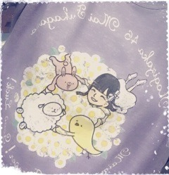

返回列表-BACK TO INDEX
前回のブログにたくさんのコメント
本当にありがとうございました。
少しずつ読んでいます、
全部読み終わるのに
もう少し時間がかかりそうですが
必ず全部読ませていただきます。
全力で構えてた7thの頃とは
ちょっと心持ちが違うかな、
私は私らしく！
もちろん成長する気持ちも忘れませんが
等身大で頑張ろうと思います！
どうかこれからも
よろしくお願いします( ˇωˇ )
私らしく......
NOGIBINGO!6
皆さんみてくだったかな？
みんなの私服姿というのは
制服とはまた違って新鮮で可愛かったですね
アシスタントの私はスマホになりました！
いくちゃん、ふたりでの
プライベートのやりとり公開してごめんね。
もう番組で出したりしないので、
これからも素敵な歌を
たくさん送ってください( ˆωˆ )
さて、6/6はTopYell発売日。
連載も何回目になったんでしょうか
いつもありがたいです～
今回は空中ヨガに挑戦しました！
久々にアクティブです、
なかなか身体張ってます、でも楽しかった！
普段経験できないことを
させていただける機会って
大切だよね( ˆωˆ )
そして6/10はマーキー発売日。
ゆったんと2人で
グラビア撮って頂きました♡
インタビューでは、
東北でのアンダーライブのこと、
2ndアルバムのことなど
お話させていただいています。
チェックよろしくね～( ˇωˇ )
リアルサウンドさんにて
能條・中元でインタビューして頂いてます！
乃木坂46 中元日芽香&能條愛未が明かす、
グループの"演劇性"と
アンダーライブ革新の理由
私はアンダーライブ、愛未はじょしらく、
2人で2ndアルバムについて
たっぷりお話ししてます( ˆωˆ )
近々告知したいなって言ってたうちの一つ。
是非読んでみて下さい！
ココナッツウォーター！らぶ！！
さて、前回らじらー！本編の
最後にお話しましたが
次回の乃木坂週である6/19は
中元、お休みさせていただきます( >_< )
くうぅぅ～～泣ける～～
私の相方・愛未ちゃんが
乃木坂コーナー2時間通して出演、さらに
21時台に和田まあやちゃん
22時台に伊藤かりんちゃんがゲスト出演！
愛未ちゃん不安がっていたので
是非メール送ってあげてください、
とはいえアシスタントの座が奪われることは
まじで勘弁。あの子は器用だからね。
声優アーツのゲストさんやメール募集など
詳しいことは追ってお知らせしますね！
さて、明日からいよいよ
2ndアルバム
「それぞれの椅子」 発売記念
乃木坂46時間TVスタート！
各インターネット局をジャックして
46時間の生配信をお届けします
公式サイトでもカウントダウンが
始まっていますね( ˆωˆ )
今回もいろんな企画を用意してるので
皆さん一緒に盛り上がりましょう～！
あ、でも、無理はせず、
眠くなったらしっかり寝てくださいね。
～お知らせ～
6/10-12 46時間TV
6/12 千原せいじのバズ☆ドル(め～テレ)
6/15 EX大衆
6/17 AKB新聞
WEB
掲載中 リアルサウンド
「ハルジオンが咲く頃」特典イベント
サイン会がありました！
来てくださった方ありがとう～＊
(＊´・ω・＊)
2016/06/09 23:42｜
15thシングル選抜メンバーに
選んで頂きました。
綺麗事のように
「ポジションには拘らなくなりました」
なんて言っていたこともありましたが
本当はバレッタの時に見た景色が
今でも忘れられなかった......
何度も何度も腐ってきましたが
その度に皆さんが私を励ましてくれて、
背中を押してくれました
私がもう一度前を向いて頑張れたのは
皆さんの声援があったからです。
長い間お待たせしてしまってごめんね、
それでも信じて応援してくださったから
今作、久々に帰ってくることができました
本当にありがとうございます。
8作振り、2回目の選抜。
あの頃は何も結果を残せずに終わった、
それからもう一度チャンスを掴むまでに
2年半もかかってしまいました。
今度こそはこの場所に居続けたい、
そのためにはこれまで以上に
頑張らなければいけない。
選抜の枠がどれだけ貴重なものか
私は発表の度に身を持って感じてきました
だから、慢心せず、というか
そもそもできる立場ではありませんが、
さらに高みを目指して活動していきます！
今の選抜メンバーの中で
私は一番選抜として過ごした時間が
圧倒的に短い、
吸収しなきゃいけないことが
たくさんあります、焦りよりも
今はワクワクしてます。
と同時に、アンダーメンバーとして
たくさんのことを学んで来ました
経験値を積むなら
場数を踏むことに勝るものはありません
だからこそ自信を持って言えます
私はアンダーライブで成長できたと。
そのことを少しでも選抜メンバーに伝えたい、
そうやってお互いに高め合っていけたら
いいなと思っています。
発表されてからファンの皆さんが
ブログにたくさんのコメントを
残してくださっていました、
ここには書き切れないくらい
メンバーのみんなから
素敵な言葉を貰いました、
今の私にはらじらー！という
最高にあたたかいホームがあります。
私自身、自慢できるものはないけれど
本当に周りの人たちに恵まれている、
それだけは私の誇りです( ˆωˆ )
乃木坂の一員でなければ得られなかった
出会いがたくさんあります、
そのひとつひとつが私にとって
かけがえのないものです
携わってくださる全ての方へ
感謝の気持ちでいっぱいです、
今作では少しでも恩返しできたらいいな。
とはいえまだまだ成長過程です
不器用で、頑固で、機転が利かなくて
いつもヒヤヒヤさせてばかりの私ですが
これからもどうかあたたかく
見守ってくださったら嬉しいです。
きいちゃん、一緒に頑張ろうね。
あすかちゃん、センターおめでとう！
中元 日芽香
2016/06/06 23:48｜
今日は握手会でした！
お洋服と髪型を
お留守番チームさんに報告o(^o^)o
1部 サイド三つ編み
月刊エンタメさんで着てた
おっきいTシャツだよ！
下履いてる？って
いっぱい言われた(｀・ω・´)
あとスニーカー珍しいねって言われた～
2部 巻き下ろし
3部 バニラスペシャル(ハタチ風)
見えないですがイヤリングしてます
まりっかめらまんが撮ってくれた
万理華ちゃんから頂いたトップス
いっぱい褒めてもらった＼(^o^)／
ANN0で着てたお洋服です
4部 ツインテール
5部 ポニーテール
やっぱツインテールには
一定数需要があるみたいなので
これからも毎回どこかの部でやる予定です
あと、ナース着ないの？って
めっちゃ言われた( >_< )
ごめんなさい気が利かなくて( >_< )
そしてまいまいの卒業セレモニーに
参加してきました！

みんなお揃いのTシャツで
まいまいを見届けたよ( ˇωˇ )
"最後の"って言葉がつく度に
どんどん実感が湧いてきます......
卒業公演、絶対素敵なものにするからね。
ということで
今日は14th最後の個別握手会でしたね。
今回から30部に増えて
夢が叶ったぞ～ってワクワクと
少しの不安とともにスタートしましたが
たくさん新しい出会いがあったり
今まで以上に深い話が聞けたり
ひとりひとりとの距離が
さらに近くなれたような気が勝手にしてます
口下手だったり不器用なところがあるので
どうしたらもっと楽しんで貰えるんだろうと
悩んだ時期もありましたが
今回は、純粋に、心から楽しかった！
今までのシングルで一番楽しかった！
ラジオ、テレビ、雑誌など
前と比べて話のトピックが増えたことも
幸せだな～と感謝をしつつ
何よりたくさんの方が足を運んで下さり
たくさんパワーを頂きました！
とっても楽しい時間でした
会いに来て下さった皆さん
本当にありがとうございました( ˇωˇ )
日曜の夜は、らじらー！サンデー
明日のゲストは
声優アーツに村川梨衣さん
乃木坂から松村沙友理ちゃんが登場！
募集中のメールテーマは
◯まっちゅんへの応援メッセージ
◯RAPで教えてNOGIZAKA CHAN
◯擬音でドッカーン対決！
◯オリひめトークセッション
他にもふつおた、リクエストソング、
レギュラーコーナーへの投稿
お待ちしてます( ˆωˆ )
宛先はこちら
まちゅん♡
あ、そういえば
全国の学校にらじらー！ポスター
届いてるみたい(^o^)報告ありがと～
～お知らせ～
6/6 TopYell
(＊´・ω・＊)
2016/06/04 23:42｜
返回列表-BACK TO INDEX